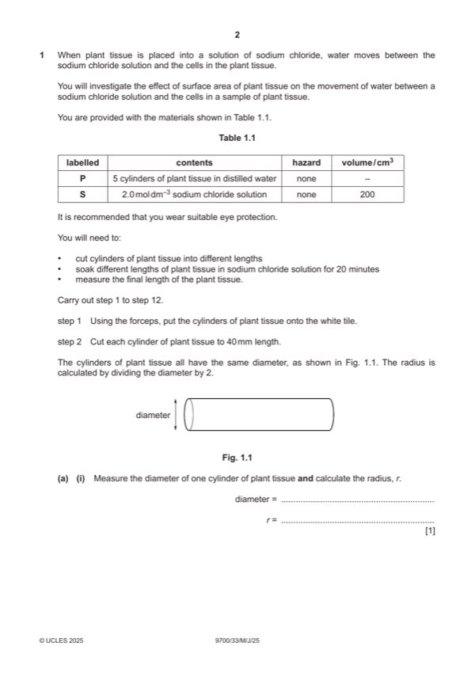

Question 1

Original paper page 2
Part 1(a)(i) — solution
diameter of the cylinder stated and the correct radius and appropriate units, mm or cm ; 1
Mark points
- Include the ideas shown in the solution above.
Part 1(a)(ii) — solution
volume of S stated and a correct reason e.g. so that the cylinders of potato are completely submerged ; 1
Mark points
- Include the ideas shown in the solution above.
Part 1(a)(iii) — solution
- 1 shows the surface area of one piece and the total surface area when n = 1 and h = 40 mm ; 2
Mark points
- 1 shows the surface area of one piece and the total surface area when n = 1 and h = 40 mm ; 2
Part 1(a)(iv) — solution
(the total surface area) increases ; 1
Mark points
- Include the ideas shown in the solution above.
Part 1(a)(v) — solution
1 heading for independent variable: number of pieces / cylinders of potato and to the left of the dependent variable ; 5
Mark points
- Include the ideas shown in the solution above.
Part 1(a)(vi) — solution
correct description of the trend according to the candidates’ results ; 1
e.g. as the surface area increases the length decreases
Mark points
- Include the ideas shown in the solution above.
Part 1(a)(vii) — solution
(as the number of pieces of potato increases, there is an increase in the total surface area) 2
any two from:
Mark points
- Include the ideas shown in the solution above.
Part 1 — solution
increases the (total) surface area in contact with the sodium chloride solution ;
Mark points
- Include the ideas shown in the solution above.
Part 1(a)(viii) — solution
exactly lining up cylinders is difficult as there will be gaps between them and they are not straight / AW ; 1
Mark points
- Include the ideas shown in the solution above.
Part 1(a)(ix) — solution
1 use, the same surface area / one length of plant tissue ; 2
Mark points
- Include the ideas shown in the solution above.
Part 1(b)(i) — solution
1 x-axis: percentage concentration of sodium chloride 4
and
y-axis: percentage number of whole red blood cells remaining ;
Mark points
- Include the ideas shown in the solution above.
Part 1(b)(ii) — solution
0.9% ; 1
Mark points
- Include the ideas shown in the solution above.
Part 1(b)(iii) — solution
0.4% sodium chloride solution has a higher water potential than the red blood cells 1
and
water enters the cells and (so) they burst ;
Mark points
- Include the ideas shown in the solution above.